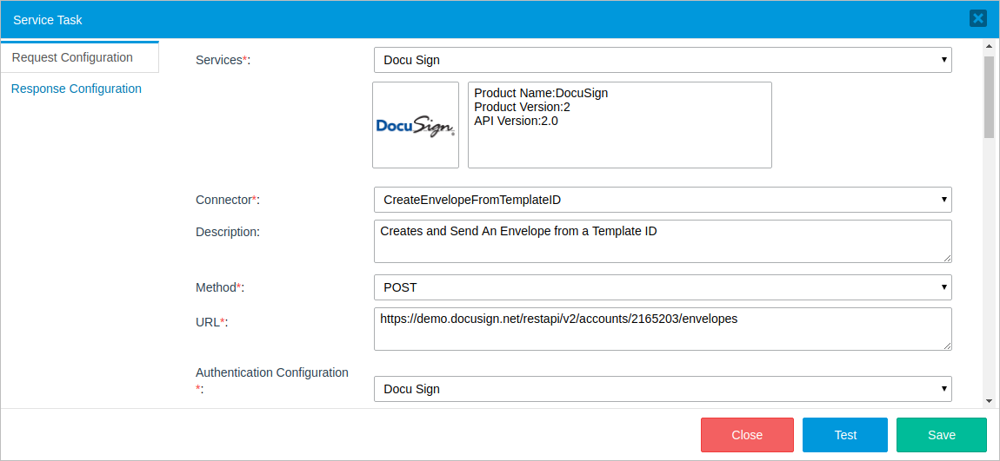
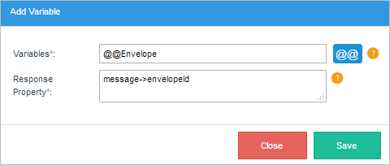
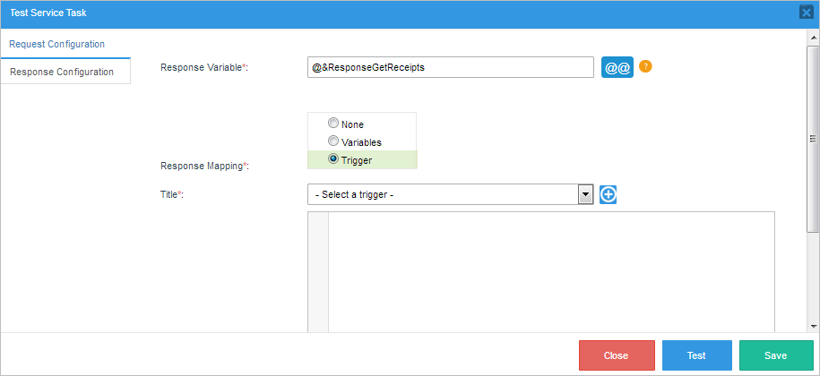
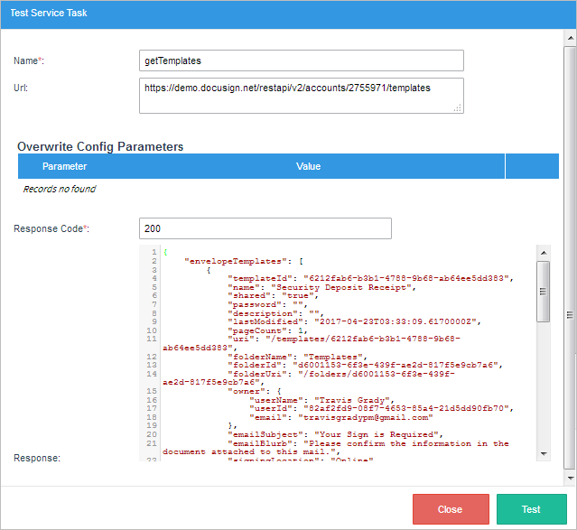

Service Task
When the Enterprise Connectors plugin is installed and enabled, service tasks become available in the designer. Service tasks provide connections between outside web services and processes in ProcessMaker.
Note 1: If the Enterprise Connectors plugin is disabled or hasn't been installed in the current ProcessMaker instance, the service task will behave like any other normal task. Take into account that if you create the task first, and then enable the plugin, the Service task will not work correctly.
Note 2: As a best practice, enable the PM Connector plugin if your organization uses Service Tasks. Using the PM Connector plugin does not affect search filtering in the Home view in ProcessMaker version 3.6.x and later.
To use the service task, the first request is to enable the Enterprise Connectors plugin, then drag and drop a regular task into the process designer and change its task type to Service task. A gear icon will appear in the left corner of the task. Access the task configuration by left clicking on the task and select Properties.

Instead of the properties window, the service task configuration window will be displayed with two tabs: Request Configuration and Response Configuration.
Request Configuration
The Request Configuration tab allow users to select and configure the connector the service task will use to make its request. This tab includes the following fields:

- Services: Select a service. The image and service information, including the product name, product version, and API version used to get access to the resource, will be displayed in the boxes under the Services field.
- Connector: Depending on the selected category, different connectors will be available to be chosen from the list.
- Description: The description of the connector selected will be displayed.
- Method: The selected connector's method.
- URL: The URL of the resource. The URL can include path parameters, which are the path sections enclosed between
{...}, that can be specified in the Path Parameters section. - Authentication Configuration: Select the authentication configuration.
Note: Note that the Description, Method and URL fields can not be edited in this section. To modify this information, go to the connector configuration under the Connectors tab.
Scroll down the window to configure the connector's other parameters.

- Headers: (Optional) Request headers, such as Authorization, Accept, Content-Type, etc. Headers contain more information about the resource to be fetched or about the client itself. In this section, headers can be added, edited or deleted. If not included, default headers will be used when the connector is executed.
- Query Parameters: (Optional) Query parameters and their descriptions. Query parameters are the method parameters not included in the URL path property used to narrow the request response. They are separated from the URL path by a question mark (?).
- Overwrite Configuration Parameters: Add overwrites of the header's configuration parameters here.
- Path Parameters: URL parameters that were enclosed between
{...}will be displayed in this section.
Scroll down the window to complete the request body.

- Body Type: Depending on the body type selected in the connector configuration, the following sections may or may not be available:
- Body: Introduces a request body in JSON format. This field is available only if the connector body type was set to "Json". ProcessMaker variables can be used in this request body.
- Form Parameters: Places the set of name and value pairs that will be sent in the request. This field is available only if the connector body type was set to "Form".
- Headers
- Overwrite Configuration Parameters
- Path Parameters
- Query Parameters
- Body
- Form Parameters
- Response Variable: Define an object variable to store the result of the request by clicking the @@ button and selecting the object variable. The result object usually returns a status and a message serialized in JSON, but it is recommended to inspect the content-type of the requested service to find out what kind of data is returned.
- Response Mapping:
- None: This option is selected by default, and means that no mapping will be performed.
- Variables: Select this option to extract values from the object variable that contains the endpoint response and put them into ProcessMaker variables. For more information, go here.
- Trigger: Select this option to use the response contained in the object variable in a trigger where the user can map it manually. For more information about this option, go here.
- Variable: (Required) Select a variable to store the extracted value of the JSON body. The @@ button is located next to this field to allow users to easily select a preexisting variable. The following variable types can be used:
- String Type - @@
- Integer Type - @%
- Object Type - @&
- Mapped Object: (Required) Specify the part of the response to be extracted by accessing the object properties using PHP object standard syntax (->).
message->property - To get the response code, the mapped object will be:
code - To get the envelopeId, the mapped object will be:
message->envelopeId - To get the envelope status, the mapped object will be:
message->status
ProcessMaker Variables
Process variables can be used to define parameter values in the following sections:
Response Configuration
The response configuration includes the following fields:

Response Mapping Using Variables
Select the Variables option to extract specific values from an HTTP response body.

Click the Add Variable button, and a dialog window will be displayed where a new variable can be configured:

Before defining the variables and mapped objects, it is necessary to know the structure of the response body. For example, if the response body consists of the following JSON:
"code":201,
"contentType":[
"application\/json; charset=utf-8"
],
"message":{
"envelopeId":"5d2da4e5-41dc-4a5f-9716-d353035d8096",
"uri":"\/envelopes\/5d2da4e5-41dc-4a5f-9716-d353035d8096",
"statusDateTime":"2017-05-25T21:16:08.2970000Z",
"status":"sent"
}
}
After the variables and mapped objects are defined, the response configuration will look like the image below.

To see how to test this configuration, go here.
Response Mapping Using Triggers
The Trigger option allows users to use the data stored in the object variable in an existing trigger by accessing the object properties using PHP object standard syntax.

Select a trigger in the Title dropdown. The PHP code of the trigger will be displayed in the Response Code textarea. To make the code easier to read and to help eliminate careless errors, the code editor contains syntax highlighting, parentheses, bracket matching and line numbering.

Also, a new trigger can be created by clicking on the plus  button. A new panel will be displayed in the same window where the title and PHP code of the new trigger can be filled in, as shown in the following image:
button. A new panel will be displayed in the same window where the title and PHP code of the new trigger can be filled in, as shown in the following image:

Note that the new trigger will be created when the service task configuration is saved.
To see examples of how service tasks are used, please refer to the DocuSign or Alfresco connectors page.
Testing the Service Task Configuration
After the service task is configured, click on the Test button at the end of the window to see if the configuration is set correctly before saving it. If the None or Trigger option was selected in the Response Mapping section, the following window will be displayed:

If the Variable option was selected, an additional section named Test Result will be displayed at the bottom of the window.

The Test Result section lists the variable mapping results in a table where the user can check to see if the mapped object values are stored in the proper variables correctly:
- Variable: The variable selected to store the response value.
- Response Property: The property of the response that will be stored in the variable.
- Status: The status of the test. A "passed" message will be displayed in this column if the variable stored valid data. Otherwise, a "failed" message will be displayed if the data couldn't be stored in the variable or the endpoint didn't retrieve any data.
- Value: The data retrieved from the endpoint response.
Service Task Examples
In this section you would see some examples of how to use the body in different services:
Google Calendar
- Create a New Event
- Delete an Event
- Get Event for Id
- List Events in My Calendar
- List Calendar
- Update Event